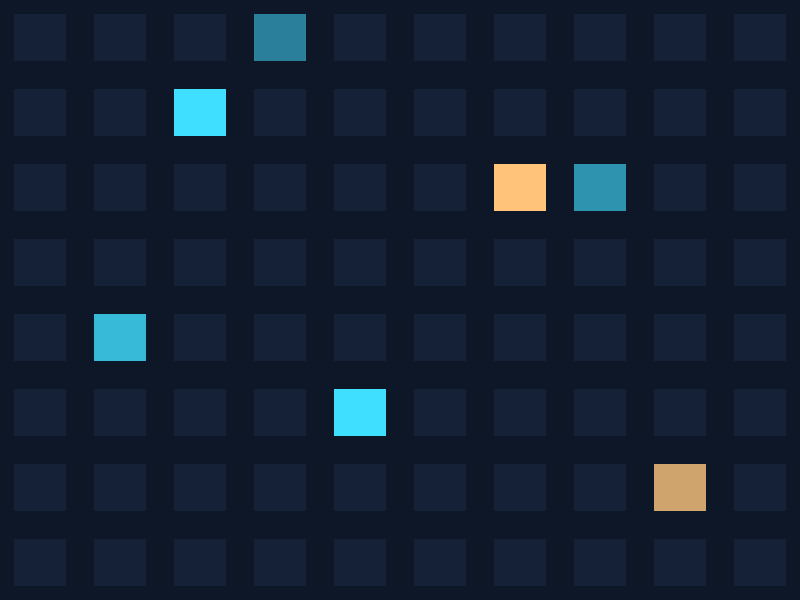
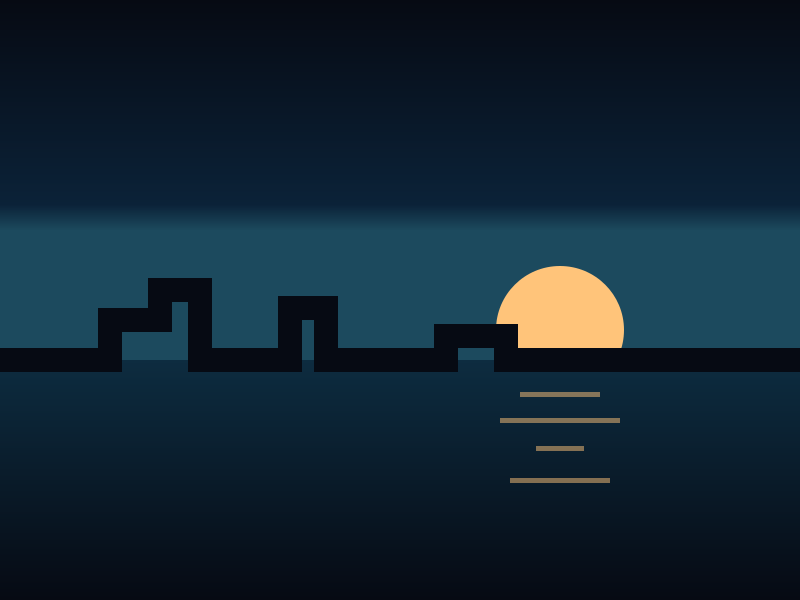
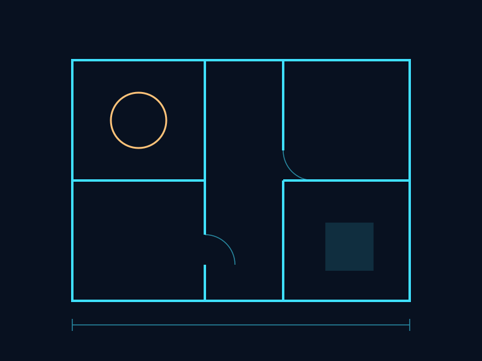

A detail worth stealing
A place for one drawing, one junction or one building that taught me something, with a few lines on why.
A workbench, not a gallery.
This is where the dabbling happens. There are three benches: design, code, and the pictures and places that feed both. Some of it works. Some of it is still a sketch.
I still think in elevations. Here’s one you can redraw yourself.
A place for one drawing, one junction or one building that taught me something, with a few lines on why.
A place for what a drawing never tells you until the concrete is poured.
I’m a dabbler, not a developer, which is exactly why this is fun.
Six pages of plain HTML, CSS and JavaScript. No framework, no tracking and nothing to install. The skylines are drawn fresh in your browser each time.
A wiring puzzle with twelve towers. Each one is grown from a single branching network, so it can always be solved.
A place for the next small tool, dashboard or half-working idea.
Work has moved me around. These are the cities I’ve called the office.


